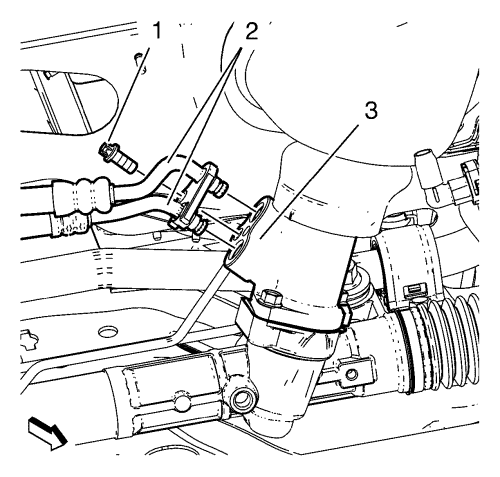

Sustitución del mecanismo de la dirección — Dirección asistida hidráulica
Herramientas especiales
EN-45059 Kit de goniómetro de par de apriete
Si desea informarse sobre herramientas regionales equivalentes, consultar Herramientas especiales .
Procedimiento de desmontaje
- Gire las ruedas delanteras hasta la posición recta y asegúrese de que el volante no se mueve.

- Desmonte el perno inferior del árbol intermedio de la dirección (1).
- Desmonte el eje intermedio de la dirección del mecanismo de la dirección.
- Elevar el vehículo y soportarlo de manera segura. Consultar Elevación del vehículo con un gato .
- Desmonte los conjuntos de neumático y llanta. Consultar Desmontaje y montaje de la rueda y el neumático .
- Desmonte el tubo de escape delantero. Consultar
Sustitución del tubo de escape delantero : 2.0 L diesel LNP → LDE,LLU,LXT,LXV,L2W,2H0 .
- Retirar el protector de salpicaduras del habitáculo frontal. Consultar Sustitución del protector de salpicaduras del habitáculo frontal .
- Desmonte el aislamiento del compartimento delantero, si el vehículo lo posee. Consultar Sustitución del aislante del compartimento delantero .
- Desmonte la barra de acoplamiento interior del varillaje de la dirección. Consultar
Sustitución de la barra de acoplamiento interior del varillaje de la dirección : Dirección asistida electrónica → Dirección asistida hidráulica .

- Desmonte y DESECHE la tuerca del árbol de fijación de la barra estabilizadora (1) del refuerzo.
- Desmonte el eje de la barra estabilizadora del refuerzo.
- Coloque un contenedor grande bajo el vehículo para recoger el líquido de vaciado.

- Desmonte el perno de los tubos flexibles de entrada y salida del mecanismo de la dirección (1), desmonte el tubo flexible de entrada y salida (2) del mecanismo de la dirección (3).

- Desmonte los pernos delantero (1) y trasero (2) del soporte del alojamiento del cambio.
- Extraiga los pernos del bastidor trasero a la carrocería. Consultar Sustitución del bastidor de la suspensión delantera y del tren de rodaje .
- Baje la parte trasera del bastidor, máx. 50 mm (1,968 pulg.) para lograr tolerancia para el mecanismo de la dirección.

- Desmonte y DESECHE los tornillos del mecanismo de la dirección (1), las tuercas (3) y arandelas (2) del mecanismo de la dirección.
- Desmonte el mecanismo de la dirección.
Procedimiento de montaje
Atención: Asegúrese de que la junta de la columna de dirección está instalada correctamente en la carcasa del piñón de la cremallera del mecanismo de la dirección. El labio de sellado DEBE descansar uniformemente sobre la superficie de la cubierta de la columna de dirección inferior. Para instalar la junta con facilidad, aplique jabón líquido al labio de sellado. Tras la instalación, verifique que el labio de sellado no sobresale en el interior del vehículo. Una instalación incorrecta podría dar como resultado un rendimiento de sellado pobre y la intrusión de agua dentro del vehículo.
- Monte el mecanismo de la dirección.
- Monte los pernos del mecanismo de la dirección (1), arandelas (2) y tuercas (3) al mecanismo de la dirección.
Precaución: Consulte Precaución con las fijaciones en la sección Prólogo
- Apriete los NUEVOS pernos del mecanismo de la dirección a 110 N·m (81 lib. pie) + 150° a 165°, utilizando el kit EN-45059.
- Levante el bastidor con el gato hidráulico.
- Monte los pernos del bastidor trasero a la carrocería. Consultar Sustitución del bastidor de la suspensión delantera y del tren de rodaje .
- Monte el perno (1) del alojamiento delantero del cambio y apriételo a 58 N·m (43 lib. pie).
- Monte el perno (2) del soporte del alojamiento trasero del cambio y apriételo a 100 N·m (74 lib. pie).
- Sustituya las juntas tóricas de los tubos flexibles de entrada y salida. Lubrique las juntas tóricas con una pequeña cantidad de aceite hidráulico.
- Monte el tubo flexible de entrada y salida (2) en el mecanismo de la dirección (3) e instale el tornillo del tubo flexible de entrada y salida de la dirección asistida (1). Apriete el tornillo del tubo flexible de entrada y salida de la dirección asistida a 11 N·m (97 lib. pulg.).
- Monte la fijación de la barra estabilizadora en el refuerzo.
- Monte la NUEVA tuerca de la fijación de la barra estabilizadora (1) y apriétela a 65 N·m (48 lib. pie).
- Monte la barra de acoplamiento interior del varillaje de la dirección. Consultar
Sustitución de la barra de acoplamiento interior del varillaje de la dirección : Dirección asistida electrónica → Dirección asistida hidráulica .
- Monte el aislamiento del compartimento delantero, si el vehículo lo posee. Consultar Sustitución del aislante del compartimento delantero .
- Monte el protector de salpicaduras del habitáculo frontal. Consultar Sustitución del protector de salpicaduras del habitáculo frontal .
- Monte el tubo de escape delantero. Consultar
Sustitución del tubo de escape delantero : 2.0 L diesel LNP → LDE,LLU,LXT,LXV,L2W,2H0 .
- Monte los conjuntos de neumático y llanta delanteros. Consultar Desmontaje y montaje de la rueda y el neumático .
- Bajar el vehículo.

Nota: El rebaje (2) del dentado fino de la cruceta tiene que estar alineado con precisión con el rebaje (1) del dentado fino del piñón de dirección. El orificio de la cruceta tiene que estar alineado con la ranura del piñón de dirección (3).
- Compruebe la alineación del dentado fino de la cruceta y del piñón de dirección.
- Monte el perno del árbol de dirección intermedio y apriételo hasta 34 N·m (25 lib. pie).
- Ajustar la alineación de las ruedas delanteras. Consultar Alineamiento de la rueda - Ángulo de ángulo de dirección o ajuste de convergencia delantera .
- Purgue el sistema de sistema de dirección hidráulica. Consultar Purga de aire del sistema de dirección asistida .
| © Copyright Chevrolet. All rights reserved |